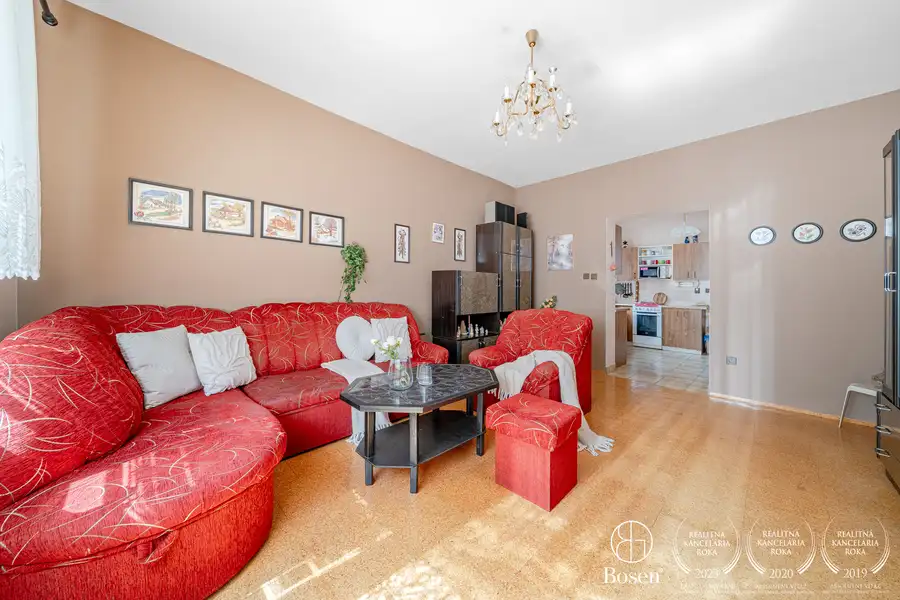
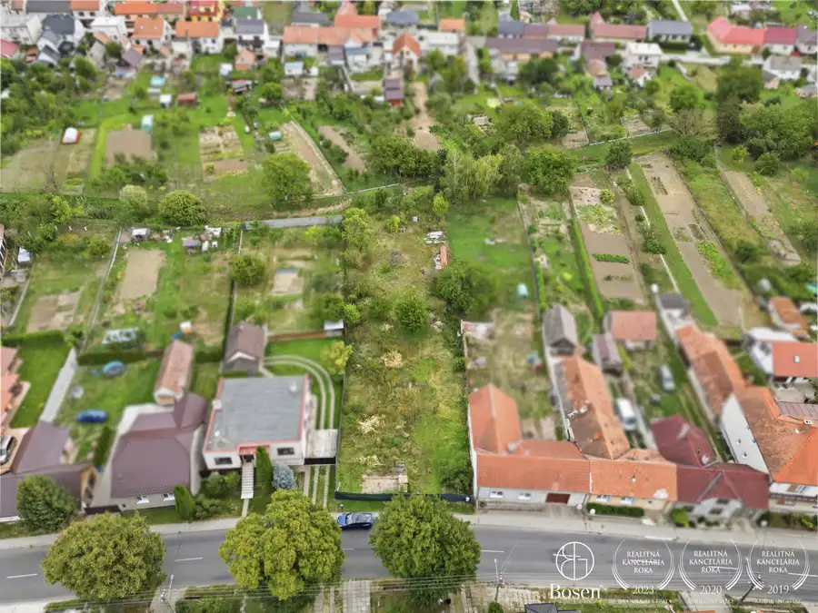
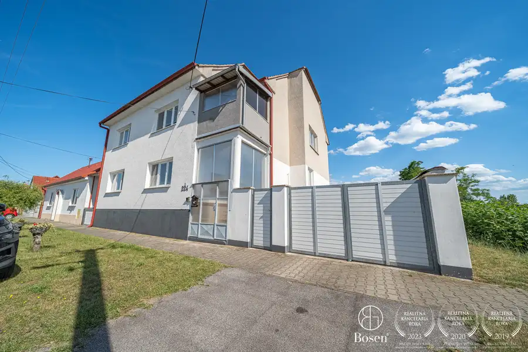

BOSEN | Prémiový 4 izbový rodinný dom s wellness, IBV Mlyny, Senica
Senica
- Plocha126 m²
- StavNovostavba
- VlastníctvoOsobné
- Energetická triedaA
O nehnuteľnosti
Bosen Group Vám predstavuje prémiový 4 izbový rodinný dom s wellness na Teplickej ulici v Senici. Táto trojročná novostavba vo vysokom štandarde ponúka dokonalé pohodlie, maximálne súkromie a exkluzívne detaily.3D VIRTUÁLNA PREHLIADKA: https://my.matterport.com/show/?m=8EtqjoVh14vRODINNÝ DOM: Rodinný dom ponúka zastavanú plochu 159 m² a úžitkovú plochu 126 m². Architektúra domu zaujme na prvý pohľad čistými líniami a premysleným pôdorysom, ktorý prirodzene oddeľuje spoločenskú časť od súkromnej. Dom vytvára vzdušný interiér s dostatkom prirodzeného svetla a plynulým prepojením s vonkajšou terasou.DISPOZÍCIA DOMU: Do domu vstupujeme cez priestranné zádverie, z ktorého je priamy prístup do samostatnej technickej miestnosti a samostatného WC pre hostí. Chodba nás ďalej vedie do dvoch hlavných krídiel domu.Po ľavej strane sa otvára veľkorysá denná zóna tvorená obývacou izbou prepojenou s kuchyňou, jedálňou a praktickou komorou. Dominantou obývacej izby je vstavaný krb a priamy výstup na krytú terasu.V pravej časti domu sa nachádza nočná zóna. Najskôr prechádzame okolo dvoch samostatných izieb, ktoré sú ideálne ako detské izby alebo pracovne. Ďalej vedie chodba okolo komfortnej kúpeľne a následne vstúpime do priestrannej hlavnej spálne, na ktorú nadväzuje samostatný šatník.WELLNESS ZÓNA: Výnimočným prvkom domu je domáce wellness zakomponované priamo v kúpeľni, kde sa nachádza fínska sauna. Z kúpeľne je vytvorený priamy východ na zastrešenú terasu, kde sa nachádza vírivka. Toto prepojenie vytvára dokonalé zázemie pre celoročný relax priamo v pohodlí domova.POZEMOK: Pozemok s rozlohou 585 m² je navrhnutý pre klientov, ktorí vyhľadávajú prémiové bývanie a relax bez nutnosti náročnej údržby. Udržiavaná zeleň a moderné chodníky zabezpečujú minimálnu starostlivosť. Dvor je vybavený vlastnou automatickou závlahou napojenou na studňu. Na pozemku je zároveň pripravená plocha na prípadnú dostavbu dvojgaráže alebo zväčšenie plochy dvora.PARKOVANIE A ZÁZEMIE: K domu prislúcha komfortné parkovanie pre tri vozidlá priamo na pozemku. Na odkladanie náradia, bicyklov a záhradnej techniky slúži záhradný domček s rozlohou 10 m².TECHNOLÓGIE A VYBAVENIE: Garantovanú úsporu a vysokú energetickú efektivitu zabezpečuje 10 kW fotovoltická elektráreň v kombinácii s centrálnou rekuperáciou s aktívnym chladením a kúrením, čo drží prevádzkové náklady na úrovni 100 € mesačne pre štvorčlennú rodinu. Vykurovanie je riešené rekuperáciou a elektrickým podlahovým kúrením. Ohrev teplej vody zabezpečuje elektrický bojler rovnako s tepelným čerpadlom. Ku komfortnému bývaniu prispieva klimatizácia s dvomi vnútornými jednotkami, zmäkčovač vody a prémiové vstavané spotrebiče značky Bosch.Dom sa predáva plne zariadený.LOKALITA: Teplická ulica patrí medzi vyhľadávané a tiché lokality. Dom sa nachádza na úplnom konci rezidenčnej zóny na malom ostrovčeku, čo zabezpečuje maximálne súkromie a pokoj bez rušného pohybu áut. Výhodou je aj prítomnosť iba jedného priameho suseda.Senica je okresné mesto na Záhorí s kompletnou občianskou vybavenosťou. Ponúka ideálnu rovnováhu medzi mestským komfortom a pokojnejším rezidenčným prostredím. Výhodou je aj dobrá dostupnosť do Trnavy, Bratislavy a smerom do Českej republiky.CENA: 394 900€MAKLÉR: Ivan Černý +421 919 025 789 cerny@bosen.skRealitná kancelária BOSEN Group je členom Realitnej únie SR a NARKS a svojim klientom poskytuje profesionálny servis počas celého procesu kúpy alebo predaja nehnuteľnosti. Cena zahŕňa kompletný právny servis, vypracovanie všetkých zmluvných dokumentov, poplatky spojené s prevodom vlastníckeho práva na katastri nehnuteľností, ako aj poradenstvo počas celého procesu. Samozrejmosťou je aj bezplatné sprostredkovanie hypotekárneho financovania prostredníctvom overených partnerov. Text a fotografie sú autorským dielom a majetkom realitnej kancelárie BOSEN GROUP. Na vizualizáciách boli použité prvky umelej inteligencie (AI).
Parametre
| Druh | Rodinný dom |
|---|---|
| Dátum zverejnenia | 14. 9. 2026 |
| Energetický certifikát budovy | A |
| Orientácia | Južná, Západná, Východná |
| Plocha pozemku | 585 m² |
| Plocha terasy v m2 | 32 m² |
| Počet izieb / miestností | 4 |
| Rok kolaudácie | 2023 |
| Rok výstavby | 2022 |
| Stav nehnuteľnosti | Novostavba |
| Telekomunikácie | Telefón, Optická sieť |
| Terás | 1 |
| Terén pozemku | Rovinatý |
| Typ | Predaj |
| Typ konštrukcie | Iná |
| Vlastníctvo | Osobné |
| Vybavenie | Terasa, Špajza, Sklad |
| Vykurovanie | Podlahové, Krb |
| Zariadenie | Zariadené kompletne |
| Zastavaná plocha | 159 m² |
| Úžitková plocha | 126 m² |
Kde to je


Mohlo by Vás zaujímať

DomNové10 184 900 €BOSEN | 4 izbový rodinný dom s pozemkom 869 m², Senica Senica 120 m² Bosen Group Vám predstavuje 4-izbový rodinný dom na priestrannom pozemku o výmere 869 m² v Senici na Železničnej ulici. Nehnuteľnosť ponúka ideálnu…
PozemokNové7 79 900 €BOSEN | Veľkorysý stavebný pozemok 1585 m2 s projektom, Štefanov, okres Senica Štefanov 1585 m² Bosen Group Vám predstavuje priestranný, kompletne zasieťovaný stavebný pozemok o výmere 1 585 m² situovaný v zastavanej, tichej časti obce Štefanov.…
DomNové10 365 000 €BOSEN | 7 izbový rodinný dom na pozemku 4 099 m², Kopčany Kopčany 220 m² Bosen Group Vám predstavuje priestranný 7-izbový rodinný dom situovaný na pozemku s výmerou až 4099 m² v obci Kopčany, okres Skalica.Táto…